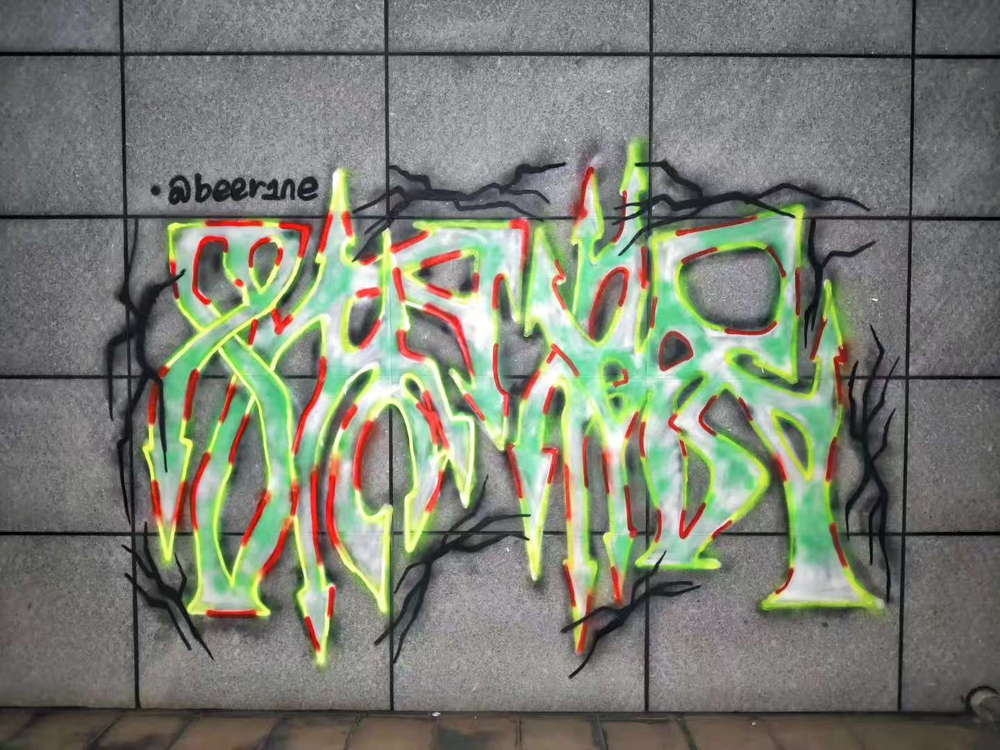

🖼️ 涂鸦图鉴
🏛️ 学校
广东工业大学

广东工业大学 | 2024.03 | 已保留
原作者：匿名
拍摄者：小李
发现时间：2024-03-15
发现地点：广工大学城校区教学楼B栋后墙
状态：已保留
广州大学

广州大学 | 2024.01 | 已保留
原作者：小张
拍摄者：小王
发现时间：2024-01-20
发现地点：广大生活区3栋楼下围墙
状态：已保留
广州美术学院

广州美术学院 | 2024.02 | 已覆盖
原作者：陈同学（广美油画系）
拍摄者：小林
发现时间：2024-02-08
发现地点：广美设计学院旁小巷墙面
状态：已覆盖
广东药科大学

广东药科大学 | 2023.12 | 已保留
原作者：匿名
拍摄者：小陈
发现时间：2023-12-10
发现地点：广药图书馆旁涂鸦墙
状态：已保留
广州医科大学

广州医科大学 | 2024.01 | 已保留
原作者：李同学（广医艺术社）
拍摄者：小杨
发现时间：2024-01-05
发现地点：广医教学楼A栋侧面墙面
状态：已保留
广东外语外贸大学

广东外语外贸大学 | 2023.11 | 已覆盖
原作者：国际学院留学生
拍摄者：小周
发现时间：2023-11-22
发现地点：广外相思河旁步道墙面
状态：已覆盖
华南理工大学

华南理工大学 | 2024.02 | 已保留
原作者：匿名
拍摄者：小吴
发现时间：2024-02-18
发现地点：华工体育馆旁围墙
状态：已保留
华南师范大学

华南师范大学 | 2024.03 | 已保留
原作者：王同学（华师美术学院）
拍摄者：小郑
发现时间：2024-03-08
发现地点：华师文科楼后小巷
状态：已保留
星海音乐学院

星海音乐学院 | 2023.12 | 已覆盖
原作者：音乐系学生
拍摄者：小冯
发现时间：2023-12-25
发现地点：星海音乐厅旁墙面
状态：已覆盖
中山大学

中山大学 | 2024.01 | 已保留
原作者：匿名
拍摄者：小何
发现时间：2024-01-12
发现地点：中大图书馆旁涂鸦墙
状态：已保留
🏘️ 村落
贝岗村

贝岗村 | 2024.02 | 已保留
原作者：本地村民
拍摄者：小朱
发现时间：2024-02-22
发现地点：贝岗村商业街入口墙面
状态：已保留
北亭村

北亭村 | 2024.03 | 已覆盖
原作者：大学生
拍摄者：小胡
发现时间：2024-03-10
发现地点：北亭村小吃街旁墙面
状态：已覆盖
南亭村

南亭村 | 2024.01 | 已保留
原作者：街头艺术家
拍摄者：小袁
发现时间：2024-01-28
发现地点：南亭村江边步道墙面
状态：已保留
穗石村

穗石村 | 2023.12 | 已保留
原作者：匿名
拍摄者：小韩
发现时间：2023-12-18
发现地点：穗石村菜市场旁墙面
状态：已保留
🛣️ 街道
中心湖

中心湖 | 2024.02 | 已覆盖
原作者：大学城学生
拍摄者：小秦
发现时间：2024-02-12
发现地点：中心湖公园栏杆墙面
状态：已覆盖
内环路

内环路 | 2024.03 | 已保留
原作者：匿名
拍摄者：小魏
发现时间：2024-03-20
发现地点：内环路辅路墙面
状态：已保留
中环路

中环路 | 2024.01 | 已保留
原作者：街头艺术爱好者
拍摄者：小龙
发现时间：2024-01-15
发现地点：中环路公交站旁墙面
状态：已保留
外环路

外环路 | 2023.12 | 已覆盖
原作者：匿名
拍摄者：小方
发现时间：2023-12-05
发现地点：外环路绿化带墙面
状态：已覆盖
天桥

天桥 | 2024.02 | 已保留
原作者：美术生
拍摄者：小廖
发现时间：2024-02-28
发现地点：大学城北亭天桥内侧墙面
状态：已保留
地下通道

地下通道 | 2024.03 | 已覆盖
原作者：匿名
拍摄者：小程
发现时间：2024-03-05
发现地点：大学城南站地下通道墙面
状态：已覆盖
📦 其他
其他

其他 | 2024.01 | 已保留
原作者：匿名
拍摄者：小江
发现时间：2024-01-08
发现地点：大学城综合商业体后巷
状态：已保留